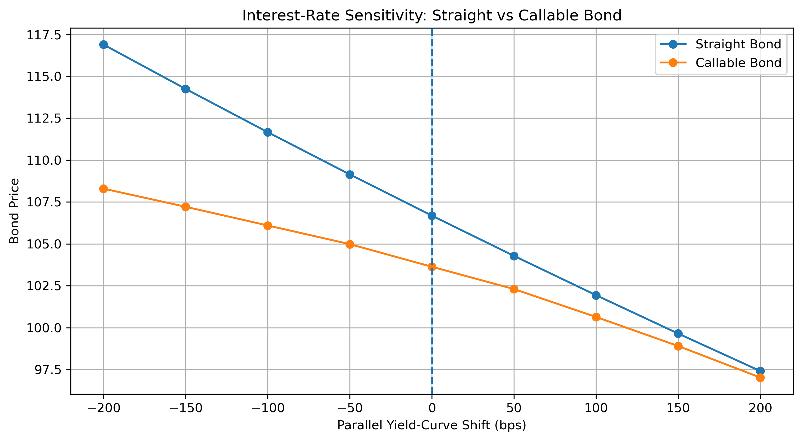
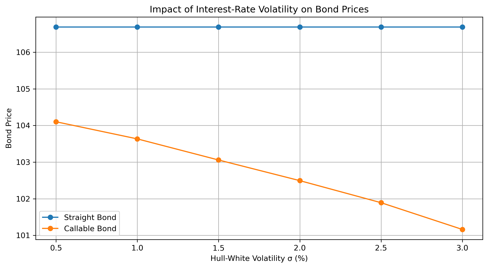

FIXED INCOME · DERIVATIVES · INTEREST RATES
Callable Bond
Pricing & Risk Management
Pricing and risk analysis of a 5-year NC2 callable bond using a Hull–White one-factor interest-rate model and a calibrated trinomial tree.
KEY RESULTS
01 · THE PRODUCT
Understanding the
Embedded Optionality
A callable bond gives the issuer the right to redeem the bond before maturity on predetermined call dates.
Economically, the investor owns a straight bond while simultaneously selling an interest-rate option to the issuer.
When interest rates decline, refinancing becomes more attractive for the issuer. The probability of the bond being called therefore increases, limiting the investor's upside relative to an otherwise identical straight bond.
02 · BOND STRUCTURE
5-Year NC2 Callable Bond
03 · METHODOLOGY
Hull–White
Interest-Rate Model
Interest-rate dynamics are modelled using the one-factor Hull–White short-rate model.
The time-dependent drift allows the model to reproduce the initial zero-coupon curve, while mean reversion and short-rate volatility control the dynamics of future rates.
The model is implemented through a trinomial short-rate tree. Arrow–Debreu state prices are used to calibrate the tree to the initial market discount curve.
04 · CALLABLE PRICING
Backward Induction
& Optimal Exercise
The straight and callable bonds are priced by backward induction through the calibrated interest-rate tree.
At every call date, the issuer compares the continuation value of the bond with the contractual call price.
Whenever the continuation value exceeds the call price, exercising the embedded option becomes optimal for the issuer.
05 · INTEREST-RATE RISK
The Call Feature Limits Duration

The straight bond exhibits the conventional positive convexity of a fixed-rate bond. The callable bond behaves differently as rates decline because the issuer's call option becomes increasingly valuable.
In the base scenario, effective duration falls from approximately 4.56 for the straight bond to 2.59 for the callable bond, while DV01 decreases from 0.0486 to 0.0268.
The embedded option therefore materially reduces the callable bond's exposure to parallel interest-rate movements.
06 · VOLATILITY RISK
Higher Volatility Benefits the Issuer

Increasing the Hull–White short-rate volatility parameter raises the value of the issuer's embedded call option.
As volatility increases, the callable bond becomes less valuable to the investor, while the otherwise identical straight bond remains unchanged because its deterministic cash flows are discounted using the same calibrated initial curve.
This illustrates the investor's implicit short-option exposure: higher interest-rate volatility increases the value transferred to the issuer through the call feature.
07 · TRADING & RISK MANAGEMENT
Managing a
Callable Position
From a trading-desk perspective, the callable bond cannot be managed purely as a conventional fixed-rate bond because its interest-rate exposure changes with the moneyness of the embedded call.
As rates decline and the option moves closer to exercise, duration and convexity can change materially. The hedge therefore needs to be dynamically adjusted rather than treated as a static DV01 position.
The position is also exposed to the volatility parameter: higher rate volatility increases the embedded call value and decreases the value of the callable bond.
08 · MODEL LIMITATIONS
From Educational Model
to Production Pricing
The framework is designed to capture the main economic mechanisms of callable-bond pricing rather than reproduce a production fixed-income pricing library.
The initial curve is illustrative, and the Hull–White mean-reversion and volatility parameters are model inputs rather than parameters calibrated to a full market surface of interest-rate derivatives.
The implementation also abstracts from credit risk, liquidity, funding, transaction costs, detailed day-count conventions and settlement mechanics.